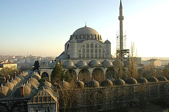

Apresentação
جامع مهرماه سلطان (التركية: Mihrimah Sultan Camii) هو مسجد عثماني يقع في حي أدرنة قابي بالقرب من أسوار القسطنطينية البيزنطية في اسطنبول، بتركيا. بني الجامع مهرماه سلطان ابنة السلطان سليمان القانوني وصممه وبناه لها المعماري العثماني الأشهر معمار سنان.
The Mihrimah Sultan Mosque is a 16th-century Ottoman mosque located near the Byzantine land walls in the Edirnekapı neighborhood of Istanbul, Turkey. It was commissioned by Mihrimah Sultan, the daughter of Suleiman the Magnificent and Hürrem Sultan, and designed by the chief imperial architect Mimar Sinan. Sited on the summit of the Sixth Hill near the highest point of the city, the mosque is a prominent city landmark.
Mihr-î-Mâh Sultan Camii İstanbul'un Karagümrük semtinin Edirnekapı bölümünde surların hemen yanında bulunan cami. Banisi (yaptıran) Kanuni Sultan Süleyman'ın kızı Mihrimah Sultan'dır. 1563-1566 yılları arasında Mimar Sinan tarafından yapıldı.
Masjid Mihrimah Edirnekapı adalah sebuah masjid peninggalan Kesultanan Utsmaniyah pada abad ke-16 yang berada di kawasan Edirnekapı, distrik Fatih, Provinsi Istanbul, Turki. Masjid ini dibangun pada tahun 1563 atas perintah Mihrimah Sultan, putri dari Sultan Süleyman I, yang kemudian bangunan ini dirancang oleh kepala arsitek kekaisaran Mimar Sinan.
مہر ماہ سلطان مسجد (ترکی زبان: 'Mihrimah Sultan Camii') ترکی کے شہر استنبول کے ضلع فاتح میں ادرنہ کاپی میں واقع ایک عثمانی مسجد ہے۔ یہ عثمانی طرز تعمیر کا ایک اعلی نمونہ ہے۔
Die Mihrimah-Sultan-Moschee ist eine Moschee des Architekten Sinan in Edirnekapı im europäischen Teil Istanbuls in unmittelbarer Nähe der Theodosianischen Landmauer.
La mezquita de Mihrimah es una mezquita otomana construida en el siglo XVI y reconstruida en el siglo XVIII tras el terremoto de 1766, cuando su minarete y su cúpula central se derrumbaron. Se encuentra ubicada en barrio de Edirnekapı, cerca de las murallas de Constantinopla en Estambul, Turquía. Su construcción fue encargada por Mihrimah Sultan, hija del sultán otomano Solimán el Magnífico y su esposa Hürrem Sultan y diseñada por el arquitecto imperial Mimar Sinan. Situada en el pico de la sexta colina, cerca del punto más alto de la ciudad, la mezquita constituye un punto de referencia prominente en Estambul.
La moschea di Mihrimah Sultan è una moschea ottomana situata vicino alla Porta di Adrianopoli delle mura bizantine di Istanbul in Turchia. Posta in cima alla sesta collina, è nel punto più elevato della città ed è la più visibile.
A Mesquita de Mihrimah Sultan é uma mesquita otomana de Istambul, Turquia. Está situada junto à Porta de Edirne (Edirnekapı) das Muralhas de Constantinopla, no interior destas, no cimo da sexta colina, um dos pontos mais altos da cidade, o que faz dela um dos pontos de referência da cidade.
米赫里馬赫苏丹清真寺 是土耳其伊斯坦布尔的一座奥斯曼清真寺，位于拜占庭城墙附近的Edirnekapı社区，位于第六山山顶，靠近该市最高点，该清真寺是伊斯坦布尔一个地标。
Мечеть Михримах-султан — мечеть XVI века, расположенная в районе Эдирнекапы исторического центра Стамбула, на вершине Шестого холма ; яркий символ средневековой архитектуры столицы Османской империи.
No mapa
Documentos e ligações
- Wikipédia — العربية
- Wikipédia — English
- Wikipédia — Türkçe
- Wikipédia — Bahasa Indonesia
- Wikipédia — اردو
- Wikipédia — Deutsch
- Wikipédia — Español
- Wikipédia — Italiano
- Wikipédia — Português
- Wikipédia — 中文
- Wikipédia — Русский
- Wikidata — Q1581190
Dados: Wikidata (CC0), atualizados de 3 em 3 meses. O ano é a data de construção mais antiga conhecida do edifício: para um edifício que se tornou mesquita mais tarde (como Santa Sofia), é a do edifício original. Fotos: Wikimedia Commons, autor e licença na página de cada foto.